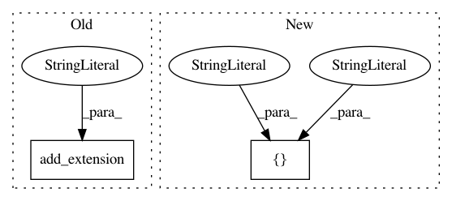

752351c0fcc8fb1c91a42234eafdb69ca8d4f362,scipy/spatial/setup.py,,configuration,#Any#Any#,8
Before Change
sources=["qhull.c"] + qhull_src,
**cfg)
config.add_extension("ckdtree", sources=["ckdtree.c"]) // FIXME: cython
config.add_extension("_distance_wrap",
sources=[join("src", "distance_wrap.c")],
After Change
"ckdtree_globals.cxx"]
ckdtree_src = [join("ckdtree", "src", x) for x in ckdtree_src]
ckdtree_headers = ["ckdtree_decl.h",
"ckdtree_exc.h",
"ckdtree_methods.h",
"ckdtree_utils.h"]
ckdtree_headers = [join("ckdtree", "src", x) for x in ckdtree_headers]
ckdtree_dep = ["ckdtree.cxx"] + ckdtree_headers + ckdtree_src
config.add_extension("ckdtree",
In pattern: SUPERPATTERN
Frequency: 3
Non-data size: 2
Instances
Project Name: scipy/scipy
Commit Name: 752351c0fcc8fb1c91a42234eafdb69ca8d4f362
Time: 2015-04-27
Author: sturla@molden.no
File Name: scipy/spatial/setup.py
Class Name:
Method Name: configuration
Project Name: scipy/scipy
Commit Name: a3c190c9593b16434d87e43e99d2c838891d70ed
Time: 2012-10-06
Author: pav@iki.fi
File Name: scipy/special/setup.py
Class Name:
Method Name: configuration
Project Name: scipy/scipy
Commit Name: ba438eab99ce8f55220a6ff652500f07dd6a547a
Time: 2015-03-17
Author: pav@iki.fi
File Name: scipy/linalg/setup.py
Class Name:
Method Name: configuration